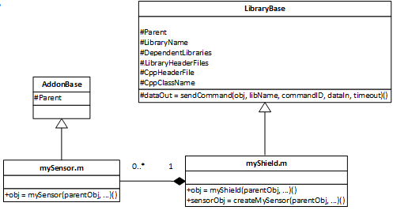

Create and Configure MATLAB Add-On Class
The MATLAB® class for your library must inherit from the matlabshared.addon.LibraryBase class:
classdef MyAddon < matlabshared.addon.LibraryBase … end
Note
Use only ASCII characters for class, package, function, script, and variable names in your MATLAB class.
The matlabshared.addon.LibraryBase class includes a variety of
properties and methods. The following diagram shows a typical class inheritance for your
add-on:

To implement your MATLAB add-on class, you must override the following properties and method:
Depending on the design of your add-on, you may also be required to override the following property and method:
Command Identifiers
The command identifiers, typically named commandID, are 8-bit
hexadecimal values. The commandID is used in the sendCommand to provide a
consistent mapping to the commandHandler
method in the Create and Configure C++ Header File.
Use the following syntax to specify a commandID property in
your MATLAB class:
properties(Access = private, Constant = true)
ADDON_OPERATION = hex2dec(cmdID)
…
end
The Create LCD Add-on example shows the commandIDs in
the LCDAddon.m classdef file as:
properties(Access = private, Constant = true)
LCD_CREATE = hex2dec('00')
LCD_INITIALIZE = hex2dec('01')
LCD_CLEAR = hex2dec('02')
LCD_PRINT = hex2dec('03')
LCD_DELETE = hex2dec('04')
end
Similarly, the LCD.h defines the
commandIDs:
#define LCD_CREATE 0x00 #define LCD_INITIALIZE 0x01 #define LCD_CLEAR 0x02 #define LCD_PRINT 0x03 #define LCD_DELETE 0x04
Note
For consistent behavior, the command identifiers in the MATLAB class must match the commandIDs used in the
commandHandler method from the C++ header file.
Library Specification
The library specification defines the name of the add-on and locations of the required C++ source files and libraries. The library specification is a property set with this code:
properties(Access = protected, Constant = true)
LibraryName = 'MyAddonFolder/MyAddon'
DependentLibraries = {}
LibraryHeaderFiles = {}
CppHeaderFile = fullfile(arduinoio.FilePath(mfilename('fullpath')), 'src', 'MyAddon.h')
CppClassName = 'MyAddon'
end
The five library specification properties must be defined as in matlabshared.addon.LibraryBase or as shown in the
following table.
| Property | Description |
|---|---|
LibraryName | Name of your add-on library as a string. The string uses the same syntax as your add-on folder structure: <AddonFolder>/<AddonName> |
DependentLibraries | Other add-on libraries required by your add-on as a cell array of strings. |
LibraryHeaderFiles | Any C++ header files needed by your add-on. See LibraryBase for details on including header files. Provide the absolute path if you have created a new header file or provide the path with respect to the Arduino® CLI library folder structure if you are using the Arduino header files. |
CppHeaderFile | Full path and name of your add-on C++ header file as a string. |
CppClassName | Name of the class in your C++ header file as a string. |
The Create LCD Add-on sample library shows a typical naming of these properties:
properties(Access = protected, Constant = true)
LibraryName = 'ExampleLCD/LCDAddon'
DependentLibraries = {}
LibraryHeaderFiles = 'LiquidCrystal/LiquidCrystal.h'
CppHeaderFile = fullfile(arduinoio.FilePath(mfilename('fullpath')), 'src', 'LCD.h')
CppClassName = 'LCD'
end
If your add-on has a C++ header file specified in
LibraryHeaderFiles, make sure the
CppClassName is not the same as the name of any of the
classes defined in the header file. In this example, LCD is
different from the C++ class defined in LiquidCrystal.h.
If your add-on requires I2C support, then
DependentLibraries = {'i2c'};Constructor
The constructor for your add-on must initialize the add-on object in two ways:
Parent the add-on object to the Arduino object.
Define the set of hardware pins used by the add-on
Here is the minimum form of the constructor:
methods
function obj = AddonName(parentObj)
obj.Parent = parentObj;
end
…
end
Typically, the add-on constructor registers add-on resources with the parent Arduino object. Similarly, checks can also be performed to ensure that add-ons do not generate resource usage conflicts. The constructor in the Create LCD Add-on example shows how a resource can be checked and then acquired to prevent two LCD add-ons existing simultaneously:
% InputPins is user input and contains the pins that connect the LCD and the arduino function obj = LCDAddon(parentObj,varargin) if(nargin ~= 7) matlabshared.hwsdk.internal.localizedError('MATLAB:narginchk:notEnoughInputs'); end try p = inputParser; addParameter(p, 'RegisterSelectPin',[]); addParameter(p, 'EnablePin', []); addParameter(p, 'DataPins', []); parse(p, varargin{1:end}); catch e throwAsCaller(e); end obj.Parent = parentObj; obj.RegisterSelectPin = p.Results.RegisterSelectPin; obj.EnablePin = p.Results.EnablePin; obj.DataPins = p.Results.DataPins; inputPins = [cellstr(obj.RegisterSelectPin) cellstr(obj.EnablePin) obj.DataPins]; obj.Pins = inputPins; count = getResourceCount(obj.Parent,obj.ResourceOwner); % Since this example allows implementation of only 1 LCD % shield, error out if resource count is more than 0 if count > 0 error('You can only have 1 LCD shield'); end incrementResourceCount(obj.Parent,obj.ResourceOwner); createLCD(obj,inputPins); end
Destructor
By default, you do not need to write a destructor for your add-on. The destructor
from the matlabshared.addon.LibraryBase class is called implicitly. Add-ons that
use hardware resources from the parent Arduino object or allocate memory in the C++ header must call an add-on
destructor to release these resources.
Warning
Not releasing resources in the destructor can cause memory leaks and failure during the creation of a new instance of your add-on.
A destructor for your add-on class must:
Override the delete method of the
matlabshared.addon.LibraryBaseclass.Execute a command in your C++ commandHandler method to deallocate any memory resources used by your library.
Not throw an error or exception. To prevent errors or exceptions being thrown during the destructor, wrap the contents in a
try-catchstatement.
The destructor in the Create LCD Add-on example shows how resource can be checked and released safely:
methods(Access = protected)
function delete(obj)
try
parentObj = obj.Parent;
% Clear the pins that have been configured to the LCD shield
inputPins = [cellstr(obj.RegisterSelectPin) cellstr(obj.EnablePin) obj.DataPins];
for iLoop = inputPins
configurePinResource(parentObj,iLoop{:},obj.ResourceOwner,'Unset');
end
% Decrement the resource count for the LCD
decrementResourceCount(parentObj, obj.ResourceOwner);
cmdID = obj.LCD_DELETE;
inputs = [];
sendCommand(obj, obj.LibraryName, cmdID, inputs);
catch
% Do not throw errors on destroy.
% This may result from an incomplete construction.
end
end
endResource Ownership
Your add–on can optionally specify certain hardware resources that are unique and cannot be shared. The Create LCD Add-on can only have a single instance since only one LCD shield can be attached to the Arduino device at a time.
Note
Explicitly defining hardware resource ownership of your add-on prevents resource acquisition and usage conflicts during runtime.
You can specify the resource ownership through the following set of properties in your add-on class:
properties(Access = private)
ResourceOwner = 'ExampleLCD/LCDAddon';
end
See Also
Create Add-On Package Folder | Create and Configure C++ Header File